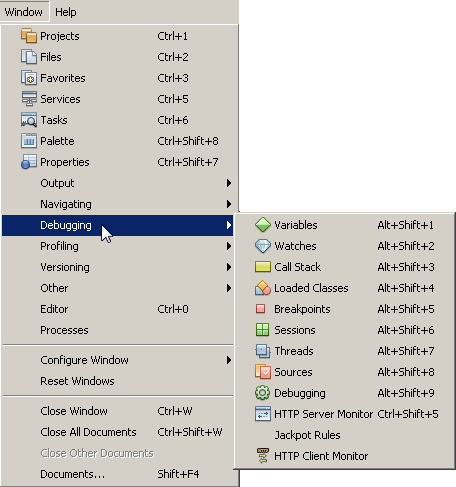

Apache NetBeans (incubating)
Apache NetBeans (incubating)Just released!
- Preparando-se
- Como a Depuração PHP com XDebug Funciona no NetBeans IDE
- Opções de Depuração
- Trabalhando com a Barra de Ferramentas e o Editor
- Janelas do Depurador
- Sessão de Depuração
- Sessão de Depuração de Amostra
- Usando Watches Adicionais
- Casos de PHP e HTML Mistos
- [[ Mapeamento de Caminho, Proxy do Depurador e Iniciando uma Sessão de Depuração em um URL Personalizado]]

Figure 1. O conteúdo desta página se aplica ao NetBeans IDE 7.2, 7.3, 7.4 e 8.0
Para seguir este tutorial, são necessários os recursos e o software a seguir.
| Software ou Recurso | Versão Necessária |
|---|---|
Pacote de download do PHP |
|
Um mecanismo PHP |
Versão 5 |
Um servidor web |
É recomendado o Apache HTTP Server 2.2. |
Um depurador PHP |
Preparando-se
Para depurar com êxito aplicações PHP no NetBeans IDE para PHP, você precisa ter o mecanismo PHP, o servidor web local Apache e o depurador XDebug instalados e configurados para desenvolvimento do PHP. Caso tenha dificuldades em fazer o XDebug funcionar, consulte o wiki do NetBeans sobre o XDebug e/ou pergunte para a comunidade em users@php.netbeans.org.
Como a Depuração PHP com XDebug Funciona no NetBeans IDE
Quando você executa um XDebug usando o NetBeans IDE, a execução do programa PHP pausa em cada linha onde você definiu um ponto de interrupção. Quando a execução do programa é pausada, o XDebug pode recuperar informações sobre o estado atual do programa, como os valores das variáveis do programa. Na prática, isso significa o seguinte fluxo de trabalho:
-
Defina um ponto de interrupção em cada linha onde a execução do código-fonte PHP deveria pausar.
-
Inicie uma sessão de depuração.
-
Quando uma linha com um ponto de interrupção é alcançada, execute o script linha após linha pressionado F7 e F8. Monitore o estado da aplicação nas janelas do depurador.
-
Feche a sessão de depuração.
Para obter um fluxo de trabalho detalhado de como usar o XDebug com o NetBeans IDE, consulte Sessão de Depuração.
O NetBeans IDE fornece uma barra de ferramentas de depuração que o ajuda a entrar em seus arquivos. Consulte Trabalhando com a Barra de Ferramentas e o Editor.
Opções de Depuração
As Opções do NetBeans IDE incluem uma guia para alterar determinadas definições default para PHP de depuração. Para abrir essas opções, acesse Ferramentas > Opções (NetBeans > Preferências no Mac), selecione as opções PHP e selecione a guia Depuração.
*Observação: *a guia Depuração foi introduzida no NetBeans IDE versão 7.1. Versões anteriores do NetBeans têm as opções de depuração na guia Gerais PHP. Nem todas as opções da versão 7.1 estão disponíveis em versões anteriores.

Você pode alterar as seguintes opções neste painel:
-
*Porta do depurador *esta porta é usada pelo XDebug, conforme definido no php.ini. Por default a porta é 9000. O número de porta nesta caixa de diálogo precisa ser o mesmo da porta do depurador definida no php.ini. Você não pode afetar a porta usada pelo XDebug nesta caixa de diálogo. Você informa ao NetBeans IDE somente sobre a porta usada pelo XDebug.
-
ID da Sessão Nome arbitrário da sessão de depuração. Por default é netbeans-xdebug. É importante anotar este valor, para os casos em que seja necessário definir a propriedade
xdebug.idekeyno php.ini, como em alguns cenários de depuração remota. -
Parar na Primeira Linha marque esta opção para que a sessão do depurador pare na primeira linha do código, em vez de parar no primeiro ponto de interrupção. Isso mantém sua tela focada no IDE, em vez de alternar para uma janela do browser ao acionar uma sessão de depuração.
-
Avaliação de Watches e Balões A avaliação de watches e balões é desativada por default. A avaliação de watches e balões desestabiliza o XDebug.
-
Profundidade Máxima de Estruturas. Definir a visibilidade de estruturas aninhadas (como arrays aninhados, objetos em objetos, etc.)
-
Número Máximo de Filhos. Define a visibilidade dos itens do array durante a avaliação do Watch. (Caso Número Máximo de Filhos tenha sido definido como 1, você verá somente o primeiro item de um array, mesmo se ele tiver mais de um item).
-
Mostrar URLs Solicitados. Abre uma nova janela de Saída durante a depuração. A janela de Saída é nomeada como URLs Solicitados por PHP e mostra os URLs processados atualmente. Os URLs são clicáveis. Clique em um URL na janela de Saída para abrir o URL em uma janela do browser.
-
Console do Depurador PHP Abre uma nova janela de Saída que mostra a saída de scrpts depurados.
Observação: defina output_buffering = Off em seu arquivo php.ini . Caso contrário, haverá um atraso em ver a saída do script na janela de Saída.
Para o propósito deste tutorial, não é preciso alterar nenhuma destas definições, exceto, como opção, para ativar watches.
Trabalhando com a Barra de Ferramentas e o Editor
O editor permite que você exiba o conteúdo dos arquivos. Sendo assim, quando você está depurando, o editor, em combinação com a barra de ferramentas do depurador, lhe oferece a possibilidade de entrar no código durante a execução, a fim de ver como o conteúdo dos seus arquivos afeta o que está acontecendo em um browser.
Usando a Barra de Ferramentas do Depurador
Quando você executa uma sessão de depuração, a barra de ferramentas do depurador é exibida acima do editor.
Figure 2. Barra de ferramentas do depurador no estado suspenso
A barra de ferramentas oferece as seguintes ações:
| Finalizar Sessão ( image::images/finish-session-button.png[] ) | Finalizar sessão de depuração |
|---|---|
Pausar ( image::images/pause-button.png[] ) |
Suspender sessão de depuração |
Retomar ( image::images/resume-button.png[] ) |
Retomar sessão de depuração |
Fazer Step Over ( image::images/step-over-button.png[] ) |
Fazer step over de uma instrução de execução |
Fazer Step Into ( image::images/step-into-button.png[] ) |
Fazer step into em uma chamada de função |
Fazer Step Out ( image::images/step-out-button.png[] ) |
Fazer step out da chamada de função atual |
Executar até o Cursor ( image::images/run-to-cursor-button.png[] ) |
Executar até a posição do cursor |
Configurando Pontos de Interrupção
Defina pontos de interrupção em seus arquivos para informar ao depurador onde parar durante a execução.
Importante: É preciso definir pontos de interrupção em seu código PHP para usar o XDebug.
Para definir um ponto de interrupção, clique na margem esquerda do editor na linha em que deseja definir o ponto de interrupção.

Figure 3. Pontos de interrupção podem ser definidos no editor
Você pode remover o ponto de interrupção clicando no emblema do ponto de interrupção ( image::images/breakpoint-badge.png[] ).
Também é possível desativar temporariamente os pontos de interrupção. Para isso, clique com o botão direito do mouse em um emblema de ponto de interrupção e desfaça a seleção de Ponto de interrupção > ✔Ativado. Isso alterna o ponto de interrupção para um estado desativado, resultando em um emblema cinza ( image::images/disabled-breakpoint-badge.png[] ) sendo exibido na margem esquerda.
Se o depurador encontrar um ponto de interrupção durante a execução, ele parará no ponto de interrupção, permitindo que você examine as variáveis nas janelas de depuração e entre em qualquer código depois do ponto de interrupção.

Figure 4. O depurador é suspenso nos pontos de interrupção
Examinando Dicas de Ferramentas
Quando o depurador é suspenso durante uma sessão de depuração, você pode passar o mouse sobre um identificador PHP no editor para exibir uma dica de ferramenta. Se o identificador for válido no quadro da pilha de chamadas selecionado, seu valor será exibido. Você também pode selecionar expressões PHP. O valor da expressão será mostrado em uma dica de ferramentas.

Figure 5. Dicas de ferramentas são exibidas no editor
Janelas do Depurador
Quando você inicia uma sessão de depuração, um conjunto de janelas do depurador é aberto abaixo da janela principal do editor. As janelas do depurador permitem manter controle dos valores de expressão ao entrar no código, examinar a pilha de chamadas de um thread sendo executado, verificar URLs de origem e alternar entre sessões, se estiver executando sessões de depuração concorrentes.
Todas as janelas do depurador podem ser acessadas no menu Janela > Depuração do IDE. Quando uma sessão de depuração está ativa, você pode começar a usar as janelas do depurador.

Figure 6. Menu do depurador acessado do menu principal do IDE
Janela Sessões
A janela Sessões mostra quaisquer sessões de depuração que estejam ativas no momento. Ao iniciar uma sessão de depuração PHP, você pode ver uma entrada para o depurador PHP na janela Sessões.

O NetBeans IDE também permite que você execute várias sessões do depurador simultaneamente. Por exemplo, você pode depurar um projeto Java e um projeto PHP ao mesmo tempo. Neste caso, você pode identificar duas sessões listadas na janela Sessões.

A sessão atual (ou seja, a sessão que você pode controlar utilizando a barra de ferramentas do depurador) é indicada pelo ícone mais proeminente (image::images/current-session-icon.png[] ). Para alternar sessões, você pode clicar duas vezes na sessão que deseja tornar atual, ou clicar com o botão direito do mouse em uma sessão não atual e selecionar Tornar Atual.
*Observação: *Não recomendamos alternar entre sessões se a sessão em que está trabalhando no momento estiver suspensa.
Você também pode usar a janela pop-up do lado direito do mouse para encerrar uma sessão (clicar com o botão direito do mouse e selecionar Finalizar), ou alternar entre a depuração do thread atual ou todos os threads da sessão (clicar com o botão direito do mouse e selecionar Escopo > Depurar Todos os Threads ou Depurar Thread Atual).
Janela Variáveis
Quando o depurador é suspenso, a janela Variáveis exibe as variáveis do objeto window atual do quadro da pilha de chamadas selecionado. Um nó é exibido para cada variável na janela atual. Os Superglobais são agrupados em um nó separado.

Quando você entra no código, os valores de algumas variáveis locais podem ser alterados. Essas variáveis locais são mostradas em negrito na janela Variáveis locais. Você também pode clicar diretamente na coluna Valor e alterar manualmente os valores das variáveis.
Janela Watches
A definição de watches desestabiliza o XDebug e não é recomendado. Os watches são desativados por default. No entanto, se você deseja definir watches, consulte Usando Watches Adicionais.
Janela Pilha de Chamadas
A janela Pilha de Chamadas lista a seqüência de chamadas feitas durante a execução. Quando o depurador é suspenso, a janela Pilha de Chamadas mostra a seqüência das chamadas de função (ou seja, a pilha de chamadas). Na suspensão inicial, o quadro da pilha mais superior é selecionado automaticamente. Clique duas vezes em uma chamada de função na janela para ir para aquela linha no editor. Se a chamada for feita para uma classe PHP, a janela Navegador também irá para aquela linha quando você clicar duas vezes na chamada.

Janela Threads
A janela Threads indica qual script PHP está no momento ativo e se ele é suspenso em um ponto de interrupção ou em execução. Se o script estiver em execução, é preciso ir para a janela do browser e interagir com o script.

Janela Códigos-Fonte
A janela Códigos-Fonte exibe todos os arquivos e scripts carregados para a sessão de depuração. A janela Códigos-Fonte não funciona no momento para projetos PHP.
Janela Pontos de Interrupção
Você pode usar a janela Pontos de Interrupção para exibir todos os pontos de interrupção definidos no IDE.

Na janela Pontos de Interrupção, você pode ativar ou desativar pontos de interrupção na janela Contexto. Você também pode criar grupos de pontos de interrupção.
Sessão de Depuração
O seguinte procedimento é o fluxo de trabalho de uma típica sessão de depuração.
Para executar uma sessão de depuração:
-
Inicie o ide e abra o arquivo que contém o código-fonte que você deseja depurar.
-
Defina um ponto de interrupção em cada linha onde deseja que o depurador pause. Para definir um ponto de interrupção, coloque o cursor no início de uma linha e pressione Ctrl-F8⌘-F8 ou selecione Depurar > Alternar Ponto de Interrupção de Linha.
-
Na janela Projetos, navegue para o nó do projeto atual, clique com o botão direito do mouse e selecione Depurar do menu pop-up. O IDE abrirá as janelas do Depurador e executará o projeto no depurador, até que o ponto de interrupção seja atingido. Observação: se o projeto atual for definido como Principal, você poderá selecionar Depurar > Depurar Projeto Principal ou pressione Ctrl-F5 ou clique em image::images/debug-main-project-button.png[].
-
Alterne para a janela Variáveis Locais. A janela mostra todas as variáveis que foram inicializadas na função atual, seus tipos e valores.
-
Para exibir o valor de uma variável fora da função, coloque o cursor em uma ocorrência da variável. A dica de ferramenta mostra o valor da variável.
-
Para executar o programa linha a linha, incluindo as linhas de todas as funções chamadas, pressione F7 ou selecione Depurar > Fazer Step Into e observe as alterações nos valores das variáveis na janela Variáveis Locais.
-
Para verificar a lógica do programa observando as alterações das expressões, defina um novo watch:
-
Para abrir a janela Watches, selecione Janela > Depuração > Watches ou pressione Ctrl-Shift-2. A janela Watches será aberta.
-
Em qualquer lugar na janela Watches, clique com o botão direito do mouse e selecione Novo Watch do menu pop-up. A Janela Novo Watch será Aberta.
-
Digite a expressão do watch e clique em OK.
Agora você pode fazer uma verificação adicional durante a depuração.
Importante: você precisa ativar os watches na guia Depuração das Opções PHP para poder definir watches.
-
Para cancelar a execução linha a linha do código em uma função e passar para a próxima linha depois da chamada da função, pressione Ctrl-F7/⌘-F7 ou selecione Depurar > Fazer Step Out.
-
Para ignorar a execução linha a linha do código em uma função, obtenha o valor retornado pela função e passe para a próxima linha depois da chamada da função, pressione F8 ou selecione Depurar > Fazer Step Over.
-
Para pausar a sessão de depuração, selecione Depurar > Pausar.
-
Para continuar a sessão de depuração, selecione Depurar > Continuar ou pressione image::images/continue-debugging-session.png[].
-
Para cancelar a sessão de depuração, pressione image::images/stop-debugging-session.png[]. 13. Quando o programa chegar ao fim, as janelas do depurador serão fechadas.
Sessão de Depuração de Amostra
A amostra nesta sessão ilustra as funções básicas do depurador, incluindo entrar e sair de funções. Ela também mostra um saída típica da janela do depurador.
-
Crie um novo projeto PHP com os seguintes parâmetros:
-
Tipo de projeto: aplicação PHP
-
Local dos códigos-fonte - o local default da pasta
htdocs -
Executar configuração: Web Site Local Encontre mais detalhes sobre como configurar um projeto PHP no documento Configurando um Projeto PHP.
-
-
Para permitir o uso de teclas de atalho durante a sessão, posicione o cursor no nó do projeto e selecione Definir como Projeto Principal no menu pop-up.
-
No arquivo
index.php, digite o seguinte código:
<!DOCTYPE HTML PUBLIC "-//W3C//DTD HTML 4.01 Transitional//EN"><html><head><meta http-equiv="Content-Type" content="text/html; charset=UTF-8"><title>NetBeans PHP debugging sample</title></head><body><?php$m=5;$n=10;$sum_of_factorials = calculate_sum_of_factorials ($m, $n);echo "The sum of factorials of the entered integers is " . $sum_of_factorials;function calculate_sum_of_factorials ($argument1, $argument2) {$factorial1 = calculate_factorial ($argument1);$factorial2 = calculate_factorial ($argument2);$result = calculate_sum ($factorial1, $factorial2);return $result;}function calculate_factorial ($argument) {$factorial_result = 1;for ($i=1; $i<=$argument; $i++) {$factorial_result = $factorial_result*$i;}return $factorial_result;}function calculate_sum ($argument1, $argument2) {return $argument1 + $argument2;} ?></body></html>O código contém três funções:
* A função calculate_factorial ()
* A função calcualte_sum ()
* A função calculate_sum_of_factorials () que chama a função calculate_factorial duas vezes, depois chama a função calcualte_sum () uma vez e retorna a soma calculada dos fatoriais.
4. Definir um ponto de interrupção (Ctrl-F8/⌘-F8) no início do bloco PHP:
<?php-
Para iniciar a depuração, clique em image::images/debug-main-project-button.png[]. O depurador para no ponto de interrupção.
-
Pressione F7 três vezes. O depurador para na linha em que a função
calculate_sum_of_factorials ()é chamada. A janela Variáveis Locais mostra as variáveis$me$ncom seus valores: image::images/degugger-stopped-at-function-call.png[] -
Para fazer step into na função
calculate_sum_of_factorials(), pressione F7. O depurador começa a executar o código na funçãocalculate_sum_of_factorials ()e para na chamada da funçãocalculate_factorial(). image::images/call-of-embedded-function.png[] A janela Variáveis Locais agora mostra as variáveis locais$argument1e$argument2declaradas na funçãocalculate_sum_of_factorials (). image::images/variables-inside-function-call-another-function.png[] -
Pressione F7. O depurador começa a executar o código com a função
calculate_factorial(). A janela Pilha de Chamadas mostra a pilha de chamadas para as funções na ordem inversa, com a última função chamada na parte superior da lista: image::images/call-stack.png[] -
Pressione F7 para fazer step into no loop. Exiba os valores das variáveis na janela Variáveis. image::images/local-variables-inside-loop.png[]
-
Quando você se certificar de que o código está funcionando corretamente, pressione Ctrl-F7/⌘-F7 para cancelar a execução da função. O programa retorna para a linha após a chamada da função
calculate_factorial(). Observação: como alternativa, você pode pressionar F7, até que o programa conclua a execução da funçãocalculate_factorial(). Você também retornará para a linha após essa chamada. image::images/call-of-embedded-function-second-time.png[] -
Como você acabou de verificar a função
calculate_factorial()e sabe que ela está funcionando corretamente, pode pular sua execução ("fazer step over"). Para fazer step over, pressione F8. O programa para na chamada da funçãocalculate_sum(). image::images/cal-of-embedded-function-calculate-sum.png[] -
Para fazer step into na função
calculate_sum(), pressione F7. -
Para fazer step over, pressione F8. Em qualquer um dos casos, o depurador para na última linha na função
calculate_sum_of_factorials(). image::images/return-result.png[] -
Pressione F7. O depurador vai para a linha com a instrução
echo. -
Pressione F7, até que o depurador saia do programa. A janela do browser será aberta e mostrará o resultado da execução do programa: image::images/program-output.png[]
Usando Watches Adicionais
Você pode definir uma expressão do watch adicional para acompanhar a execução do programa. Isso pode ajudá-lo a pegar um erro.
Advertência: a definição de watches adicionais desestabiliza o XDebug. Os watches são desativados por default em Opções de Depuração.
-
Atualize o código como se segue (substitua um mais por um menos):
function calculate_sum ($argument1, $argument2) {return $argument1 - argument2;}Imagine que isso tenha resultado de um erro de digitação, mas você na verdade precise calcular a soma. 2. Selecione Depurar > Novo Watch ou pressione Ctrl/⌘-shift-F7. A Janela Novo Watch será Aberta. 3. Digite a seguinte expressão e clique em OK.
$factorial1+$factorial2A nova expressão aparece na janela Watches. 4. Execute a sessão de depuração. Quando o depurador parar na linha
return $result;compare o valor da expressão na janela Watches e o valor de $result na janela Variáveis Locais. Eles devem ser iguais, mas estão diferentes. image::images/watches.png[] Este exemplo é muito simples e deve dar uma noção geral do uso de watches.
Casos de PHP e HTML Mistos
Você pode depurar código que contenha blocos PHP e HTML. No exemplo da seção Sessão de Depuração de Amostra, os valores estão em hard code. Expanda o código com um form de entrada de HTML para digitar valores.
-
Adicione o seguinte código HTML acima do bloco <?php ?>:
<form action="index.php" method="POST">Enter the first integer, please:<input type="text" name="first_integer"/><br/>Enter the second integer, please:<input type="text" name="second_integer"/><br/><input type="submit" name="enter" value="Enter"/></form>Encontre mais informações sobre forms de entrada HTML.
-
Substitua as seguintes linhas na parte superior do bloco <?php ?>:
$m=5;$n=10;$sum_of_factorials = calculate_sum_of_factorials ($m, $n);echo "The sum of factorials of the entered integers is " . $sum_of_factorials;pelo seguinte código:
if (array_key_exists ("first_integer", $_POST) && array_key_exists ("second_integer", $_POST)) {$result = calculate_sum_of_factorials ($_POST["first_integer"], $_POST["second_integer"]);echo "Sum of factorials is " . $result;}-
Defina um ponto de interrupção no início do bloco <?php ?> e inicie a sessão de depuração.
-
Pressione F7. O depurador entra no programa. A janela do browser é aberta mas o form de entrada não é exibido. Esse é o comportamento correto do depurador, porque ele tem que entrar em todo o código-fonte de uma página web, antes que a página possa ser exibida. Praticamente, isso significa que o depurador entra no código duas vezes. Na primeira vez, o depurador processa o código para exibir o form de entrada de HTML. Na segunda vez, o depurador executa o código PHP passo a passo.
-
Pressione F7, até que o depurador alcance o final do programa e o form de entrada seja aberto.
-
Preencha o form e clique em Enter. A sessão de depuração continua conforme descrito na seção Sessão de Depuração de Amostra.
[[ Mapeamento de Caminho, Proxy do Depurador e Iniciando uma Sessão de Depuração em um URL Personalizado]]
É possível depurar scripts e páginas web, e estas podem ser depuradas local ou remotamente. Infelizmente, para a Depuração Remota, o arquivo php depurado no servidor remoto não é o mesmo que o arquivo aberto no NetBeans IDE em execução em uma máquina local. O suporte para o depurador no NetBeans precisa, portanto, conseguir mapear os caminhos do servidor para caminhos locais. No entanto, devido a muitas complicações, o mapeamento de caminho não pode ser resolvido automaticamente para cada cenário individual. Portanto, começando no NetBeans 6.7, você pode definir manualmente o mapeamento do caminho por meio da configuração do projeto para execução de configurações individuais. Você também pode especificar o servidor proxy, se houver, e o URL no qual a sessão de depuração é iniciada. Caso você não especifique esse URL, a depuração será iniciada em seu arquivo de índice.
Para configurar o mapeamento do caminho e ativar URLs de depuração personalizados:
-
Clique com o botão direito do mouse no nó do projeto na janela Projetos e abra as Propriedades do projeto no menu de contexto.
-
Na caixa de diálogo Propriedades do Projeto, vá para a categoria Executar Configuração.
-
Clique no botão Avançado. A caixa de diálogo Configuração Avançada da Web será aberta.
-
Adicione o caminho do servidor e o caminho do projeto para o mapeamento do caminho.
-
No "URL do Depurador", selecione um dos seguintes (não deixe o default selecionado):
-
Perguntar Todas as Vezes, que faz com que o IDE solicite o URL quando você inicia uma sessão de depuração.
-
Não Abrir o Web Browser, que requer que você abra o browser e insira manualmente o URL (é preciso ter a variável GET/POST XDEBUG_SESSION_START).
-
-
Se você estiver usando um servidor proxy para a depuração, digite o nome do host e a porta do servidor na seção Proxy do Depurador.
Para obter mais informações, consulte o post Mapeamento do Caminho no Depurador PHP no blog Net Beans para o PHP.
Para enviar comentários e sugestões, obter suporte e manter-se informado sobre os desenvolvimentos mais recentes das funcionalidades de desenvolvimento PHP do NetBeans IDE, junte-se à lista de correspondência users@php.netbeans.org.